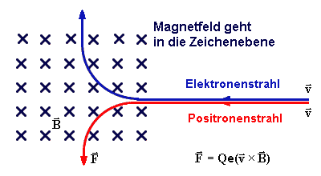
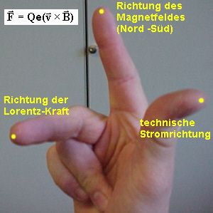
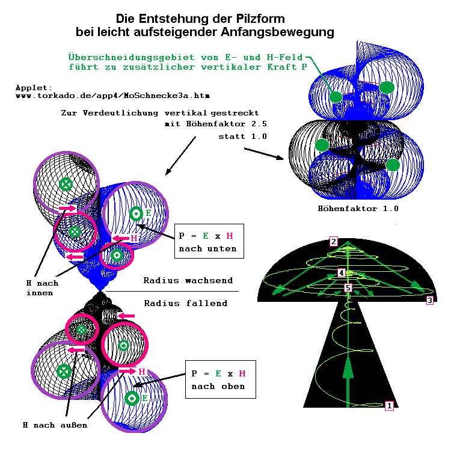
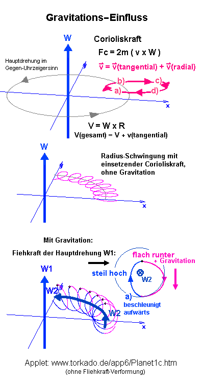

|
Kräfte und Ladungen in Ätherflüssen
Für ein positives Teilchen oder die Bewegung von Plus nach Minus (Technische Stromrichtung I) gilt: Der Daumen der rechten Hand zeigt in in Richtung I bzw. E und die Richtung der gekrümmten Finger zeigen die Magnetfeldrichtung an :
Will man die Ablenkungs-Richtung eines positiven Teilchens im Magnetfeld wissen, muß man den Daumen der linken Hand in Magnetfeldrichtung halten (hier in die Papierebene hinein). Die Richtung der gekrümmten Fingerspitzen zeigt dann die Bewegungsrichtung des positiven Teilchens an :  Das Magnetfeld weist im Äußeren von Magneten immer von Nordpol zum Südpol :
Ein
Kreuzprodukt, wie hier mit v x B und der Lorentzkraft F demonstriert,
wird richtungsmäßig ermittelt, indem man IMMER die rechte
Hand benutzt.  Das nächste
Bild zeigt einen Strom als E-Feld-Richtung
Ladung ist relativ Für zusätzliche Magnetfelder -918<dH<0, die gegen das Hintergrund-G wirken, verhält sich das Elektron ebenfalls als negative Ladung (je kleiner dH, umso "negativer"), und die des Protons immernoch als positive. Unser H-Grundfeld beträgt vermutlich G=917. Wenn dH kleiner als -918 wäre (Gesamtsumme Null oder negativ), könnte auch das Proton als negativ geladen erscheinen und hätte gar keine oder leicht negative Masse, dafür wäre das Elektron sehr schwer in G-Gegenrichtung. Unterstützen wir die G-Richtung durch ein künstlich erzeugtes Magnetfeld dH>1, dann wächst G über 918 hinaus und das Elektron (Größe 918 antiparallel) wirkt plötzlich wie ein positiv gelades Teilchen (z.B. Positron), weil die Differenz positiv wird und der Summenvektor nach unten zeigt. Das Proton wird trotzdem "noch positiver". Möglicherweise sind derzeit unsere technischen Möglichkeiten zur H-Feld-Erzeugung sehr gering im Verhältnis zur absoluten Hintergrundgröße 917 und bewegen sich im Bereich <2. Man beachte bitte meine Hypothese, daß auch die GRAVITATION torkadoförmige Struktur hat, und NICHT etwa NUR NACH UNTEN gerichtet ist, wohl aber in der zeitlichen Summe aus Gründen der Torkado-Asymmetrie. Weiter zum
obigen Bild: Die H-Linien zeigen Drehachsen an und Gebiete maximalen Äther-Mangels, da der Sog der E-Linien leerere Räume hinterläßt. Der P-Vektor (nächstes Bild) zeigt immer von einer H-Linie weg, insbesondere der Torkado-Mittelachse, wo sich alle Linien bündeln, wie im Dorn des Dorntorus. Dort wird ständig Energie (Äther) hinausgepumpt. Hier versagt die Erklärung der Thermodynamik. Kaltes wird immer kälter, ganz einfach erklärbar mit dem räumlichen Aufbau des Torkado und P=ExH. Das Kerngebiet eines Torkados ist extrem kalt und viel leerer als in den dynamischen E-Linien (siehe Abschnitt Masse, Atom). |


|
Dies ist eine Dorntorus-Schnecke. Der Schlauch (schwarz) hat als Radius immer die Größe des aktuellen Mittelradius (rot). Betrachtet man die Schnecke von oben, sieht man gut, wie nah sich jeweils H (schwarz bzw. oben im Bild blau) und das E (rot) der größeren Bahn kommen, wenn der Radius von E bei jeder Spiralwindung nach innen um die Hälfte fällt. In der absoluten Mitte treffen sich alle abwärtsweisenden H-Linien von Anfang an. Was ist nun das besonders Günstige an der Torkado-Form ? Die Gegen-Induktion im Inneren einer Spule (siehe oben, Bild zur Wellenausbreitung) führt zur Förderung des gesamten Energieflusses, wenn dieser innen bereits in Gegenrichtung fließt (Wirbelrohr, Flüsse mit Mäander, Zyklonen-Generator, Coler-Generator). Weiter
ist noch zu beachten:
Mechanische Betrachtung: Corioliskraft im drehenden (flüssigen) System(W nach oben, zu interpretieren als -H)Fc = 2m ( v x W ) wobei v eine zusätzliche Bewegung im bereits drehenden System W ist (mit Tangential-Vektor V=WxR). Phasen: Fazit: Der (beschleunigte) Vortrieb des Hauptkreises findet innen statt (Applet, A_vertikal=0 setzen)).
 coriolis.gif Wenn man Vortrieb und Rücktrieb zeitlich trennt (sehr flache Bahn, großes W1), und den Rücktrieb unterdrückt, kann W1 via Gravitation beschleunigt werden. Dies
ist höchstwahrscheinlich die Funktion der Messiasmaschine,
wenn sie richtig nach Vorschrift dimensioniert ist. Vergleich mit Elektromagnetismus: An
folgendem Bild (Applet) sieht man die
Identität von mechanischen Kräften und der Magnetfeld-Induktion
(Rechter Daumen für technische Stromrichtung I auf grauer Linie,
beginnend an x-Achse, Finger zeigen Verlauf des H-Feldes). Wir dürfen immerhin nicht vergessen, daß auch das Elektron (egal, in welche Richtung es wirklich fließt) eine innere Torkado-Dynamik hat, also auch longitudinale Anteile, ähnlich wie die Bahn der Wasserteilchen in einer Meereswelle. Achtung!
Es ist völlig das gleiche Programm wie beim vorherigen Bild, mit
denselben Einstellungen, nur auf den Kopf gestellt, um es mit dem obigen
Bild zur Widerstandsfreien Einwirbelung vergleichen zu können. Soll in beiden Fällen die Gravitation von vornherein nach unten zeigen, also lediglich die Corioliswirkung an einer linkshändigen Rotation gezeigt werden, muß jetzt A_vertikal/R als positive Größe gesetzt werden (Applet) und es geht wieder außen herunter und innen hinauf, in gleicher Form wie bei coriolis.gif . Die Definition der mechanischen (positiven) Drehrichtung entspricht genau der Ablenkung eines negativen Teilchens im H-Feld (rechter Daumen in H-Feldrichtung). Corioliskraft
= k1* v x W = - k2* v x B = Lorentzkraft Das bedeutet, daß eine Richtungsumkehr nötig ist, um andererseits mit der technischen Stromrichtung (von Plus nach Minus, Bewegung positiver Ladung) zu arbeiten. Stecken wir diese Umkehr gleich in die G-Richtung, ist die "auf dem Kopf stehende Corioliskurve ohne Datenänderung" (Applet) wieder im nach unten gerichteten G-Feld. Weiteres...
Meine Email-Adresse: info@aladin24.de
|
{kind=link}